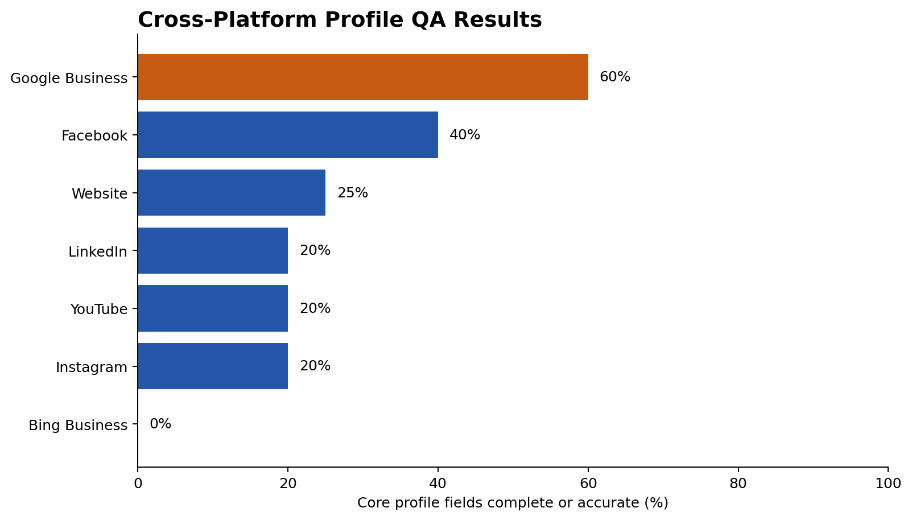

Quality assurance · source verification · prioritization
Business Profile QA Audit
A structured cross-platform review that found 25 missing, inaccurate, or broken information checks across seven public profiles.
7platforms reviewed
25quality gaps
5★Google rating
0review responses

Method
I defined a repeatable field checklist, recorded expected versus actual information, separated missing from inaccurate data, and converted the findings into an ordered correction plan. The public version removes contact details that are not needed to evaluate the work.
Selected findings
- Google Business was the most complete profile in the reviewed set, but still lacked key information.
- Several profiles used incomplete locations or broken cross-platform links.
- The business had a 5-star Google rating from three reviews, but no review responses.
- Six website testimonials were available but were not fully reused across public reputation channels.
Limitations
The local-search checks were performed from Bloomington, Indiana and could not exactly simulate a Charlotte-based search. That limitation was documented instead of presenting the result as a complete local ranking study.